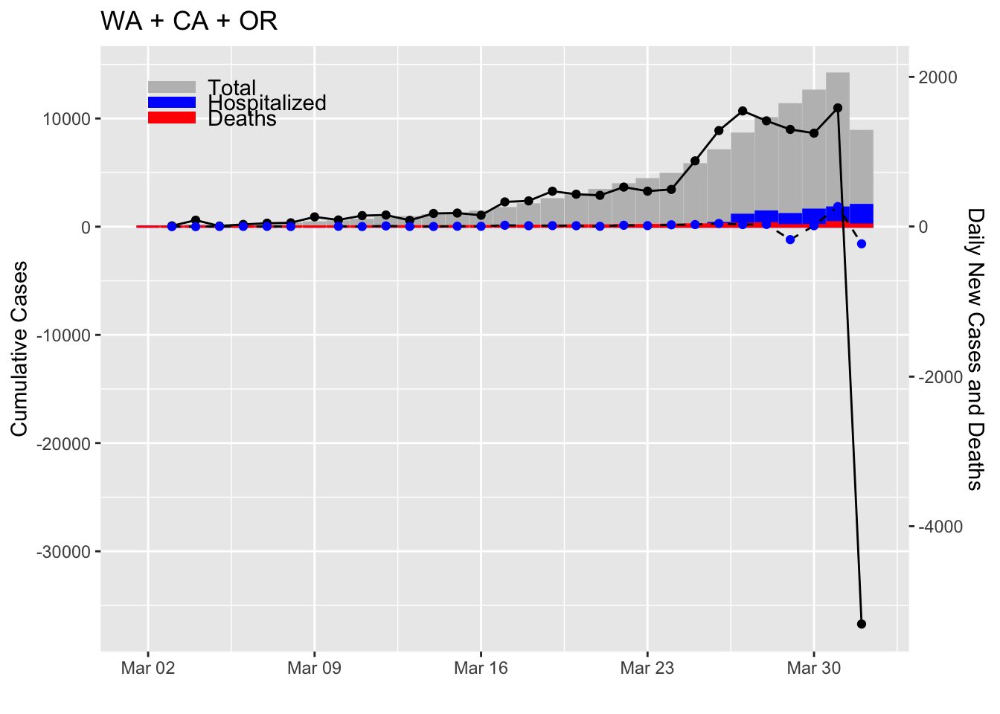

Load the package.
library(CoV19)The data are in the following objects. They have a few common columns: date, region, positive, death. Then there are some other columns depending on the source.
states
italy
worldHere is an example from states:
head(states)## date region positive negative pending hospitalized
## 1 2020-03-28 AK 85 2836 NA 5
## 2 2020-03-28 AL 696 4184 NA NA
## 3 2020-03-28 AR 404 2938 0 48
## 4 2020-03-28 AS 0 NA 0 NA
## 5 2020-03-28 AZ 873 7455 21 NA
## 6 2020-03-28 CA 4643 20549 64400 1034
## death total.tests
## 1 2 2921
## 2 3 4880
## 3 5 3342
## 4 0 0
## 5 15 8349
## 6 101 89592
## hash totalTestResults
## 1 edb7e6bcde715f8bbea31547e99aa8b4712ea5fb 2921
## 2 c9986a845bd2f8f9c9a4294a8e5d66a01ee6aadf 4880
## 3 47d05acbbf2fbb56ddd9c44c3b9e204d10f050c3 3342
## 4 c6fae61e10e1a1154e848a52a3665304ec76dd53 0
## 5 9b04c4c073cb904f606bb9efb2ac77c8ecc810cd 8328
## 6 399721733fa1eeda46e39c0158322c44fb1d985d 25192
## fips deathIncrease hospitalizedIncrease negativeIncrease
## 1 02 1 2 517
## 2 01 0 0 0
## 3 05 2 0 1393
## 4 60 0 0 0
## 5 04 2 0 0
## 6 06 23 288 3169
## positiveIncrease totalTestResultsIncrease
## 1 16 533
## 2 109 109
## 3 23 1416
## 4 0 0
## 5 137 137
## 6 764 3933## date region positive negative pending hospitalized death total.tests
## 1 2020-03-27 AK 69 2319 13 3 1 2401
## 2 2020-03-27 AL 587 4184 NA NA 3 4771
## 3 2020-03-27 AR 381 1545 0 48 3 1926
## 4 2020-03-27 AS 0 NA 0 NA 0 0
## 5 2020-03-27 AZ 736 7455 30 NA 13 8221
## 6 2020-03-27 CA 3879 17380 57400 746 78 78659
## hash totalTestResults fips deathIncrease
## 1 588f633d59494e4d58466fccfa9628c98568396b 2388 02 0
## 2 c3883f10c8760fdd9d196c5e2483205434bc4e0f 4771 01 2
## 3 a67d588363970b93865400184a7b96de73096b8d 1926 05 0
## 4 84bac05a7009ace4086a2e5280d56a5ccea95c40 0 60 0
## 5 81fb87573f6b5484fc4879e20ef93989c969d113 8191 04 5
## 6 d7b5a1250b2f63a88e58953c8547feab1986f158 21259 06 13
## hospitalizedIncrease negativeIncrease positiveIncrease
## 1 0 518 10
## 2 0 591 81
## 3 7 41 46
## 4 0 0 0
## 5 0 7108 159
## 6 746 0 873
## totalTestResultsIncrease
## 1 528
## 2 672
## 3 87
## 4 0
## 5 7267
## 6 873# Just WA
x <- subset(states, region=="WA")
# Two states
x <- subset(states, region %in% c("WA","CA"))
# All areas in China
x <- subset(world, stringr::str_detect(region, "China"))Let’s say you want to have the sums for all regions. You can do that with dplyr.
library(dplyr)
# If you are unfamiliar with dplyr, the %>% is a pipe that sends
# the result to the left into the function in the right
x <- states %>%
subset(region%in%c("WA","CA","OR")) %>%
group_by(date) %>%
summarize_if(is.numeric, sum, na.rm=TRUE)
# This will not have the region column, so we add that back on
x$region <- as.factor("WA + CA + OR")We can pass this data object to plot2 to plot.
plot2(x)